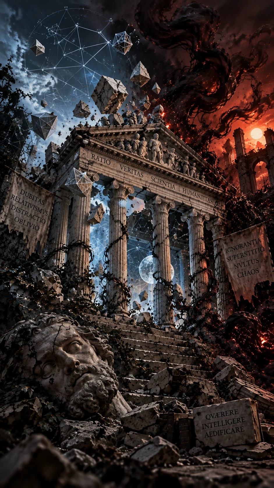
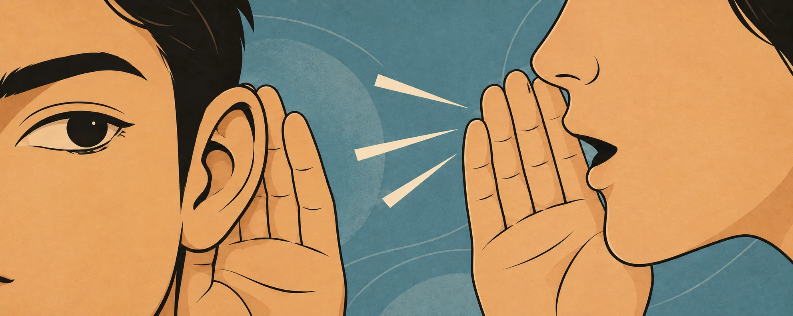
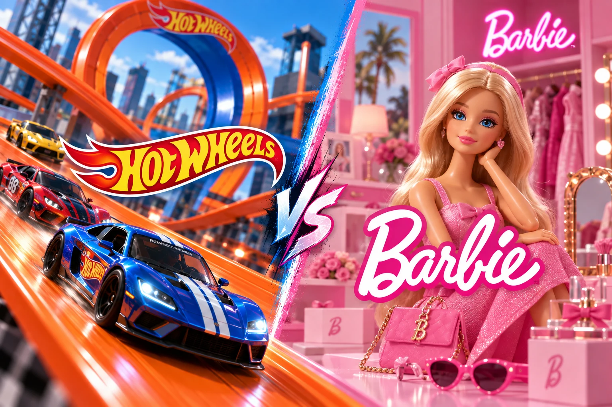
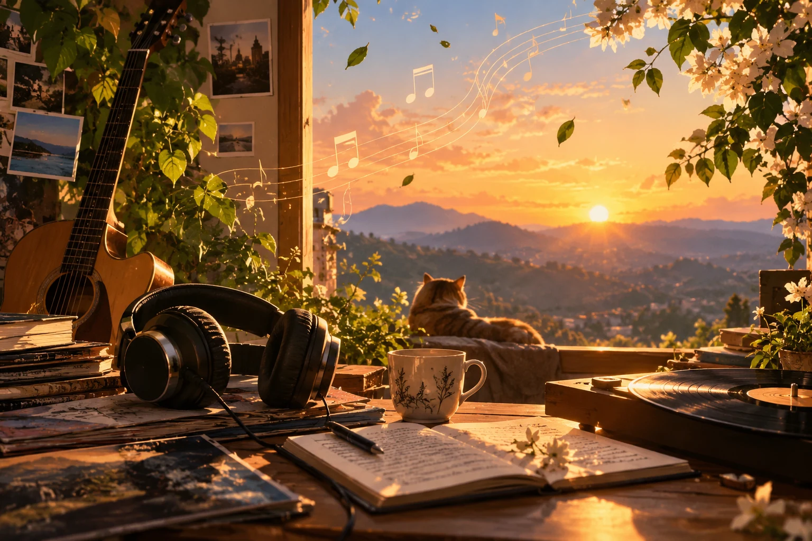
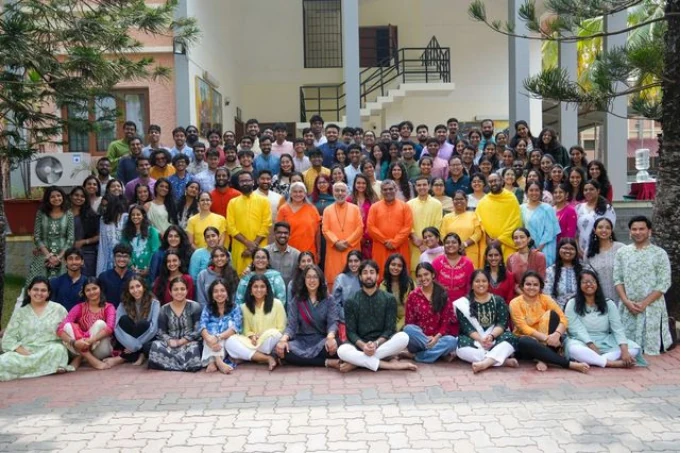

Lead essay Opinion
The Death of Rationalism
Rationalism was meant to be a method, not an identity. It was to be the discipline of honest seeing, not another tribe of the like-minded. You question, you examine, you see clearly.
Writing by students, first published in The Crossroads.
17 complete articles from 7 issues, gathered here for discovery and reading.
01 / The current edition
Lead essay Opinion
Rationalism was meant to be a method, not an identity. It was to be the discipline of honest seeing, not another tribe of the like-minded. You question, you examine, you see clearly.
02 / The complete collection
17 stories
Opinion
Rationalism was meant to be a method, not an identity. It was to be the discipline of honest seeing, not another tribe of the like-minded. You question, you examine, you see clearly.

Culture
A digital world where millions come togethersome for a living, some for leisure, some for addiction, and some for peace.
Culture
The Star Wars prequel is, at its core, a tragedy. Yet within popular discourse it has long been dismissed as pulp science fiction; a spectacle over substance sort of material.
Opinion
In today’s world, nearly everything we do has a trace of artificial intelligence in it, from our daily tasks to our school projects.
Campus Life
Do you agree with me that here, in CIRS, news about people and events spreads like wildfire? Whether in late-night talks or Crossroads walks, we cannot keep gossip to ourselves.

Opinion
I am a proud biology student, and my biology class has a MEGA, WHOPPING, GARGANTUAN class strength of 2! And these supercalifragilisticexpialidocious students are girls.

World
Every week, we stare at the "News of the Week" presentation on the screen, clapping loudly at the second anything mildly related to India, any sports team, or Donald Trump that flashes by.
Sport
The summer of 2023 changed football forever. It wasn’t just the usual go-to of European transfers; it was something weird. Why?
Culture
Music is something most of us cherish, holding a special place in our lives. It speaks volumes about our personality, and offers insights into our very souls.

The Editorial
Like most other kids, I had an enjoyable childhood with my family, so naturally, making the tough decision to join a boarding school 2,359 long kilometres away from home was an emotional one.
Reflection
Bag stuffed, folder filled, and brain completely devoid of meaning: that would accurately encapsulate my state in the very first class of CHYK CIRS.

Economics
It's Sunday. Millions are tuning into their digital screens to watch one thing. Fast cars. Actually, 20 of them, racing at speeds that vaporize everything in their path.
Economics
Imagine yourself in this familiar high school scene where you and your best friend are tasked with a huge project, the kind that demands hours of focused, dedicated work.
Sport
"No, I cannot do it anymore" - Have you said this to yourself in the middle of a 5,000 metres race? And later, regret the same while reflecting?
The Editorial
The human brain evolved to navigate and maintain social structures of life. Primordially, we needed each other to survive.

Culture
A long day at work, and you’re tired to the bone. You decide to visit the nearby park to finally take a break, and seat yourself on a bench.
Try another search or topic to see the full collection.
03 / Earlier voices
July 2024 Issue 17
The human brain evolved to navigate and maintain social structures of life. Primordially, we needed each other to survive.
April 2026 Issue 30
Music is something most of us cherish, holding a special place in our lives. It speaks volumes about our personality, and offers insights into our very souls.
Every article began in print
Read the complete magazine issues and explore the student publication behind these stories.
This online collection is managed by the Crossroads Editorial Board and the CIRS Social Media Team.